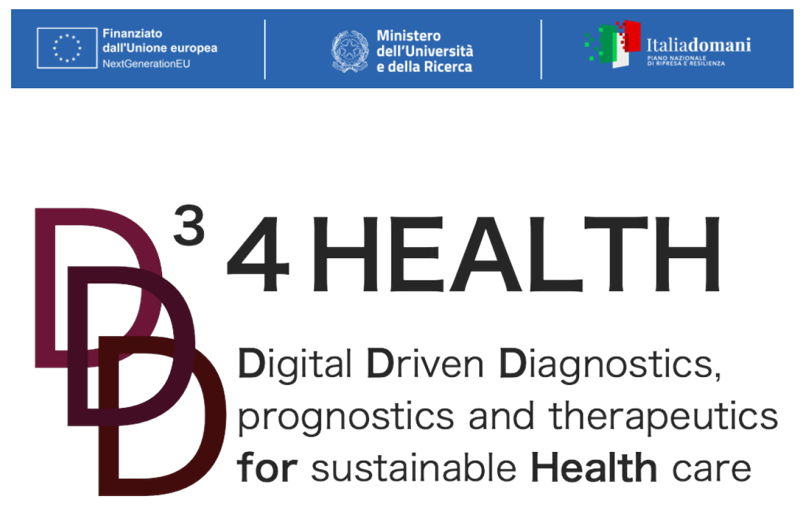
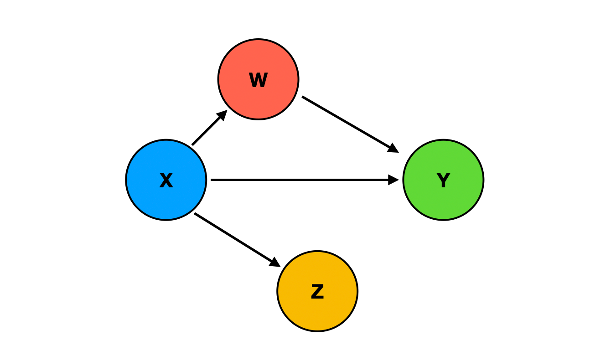
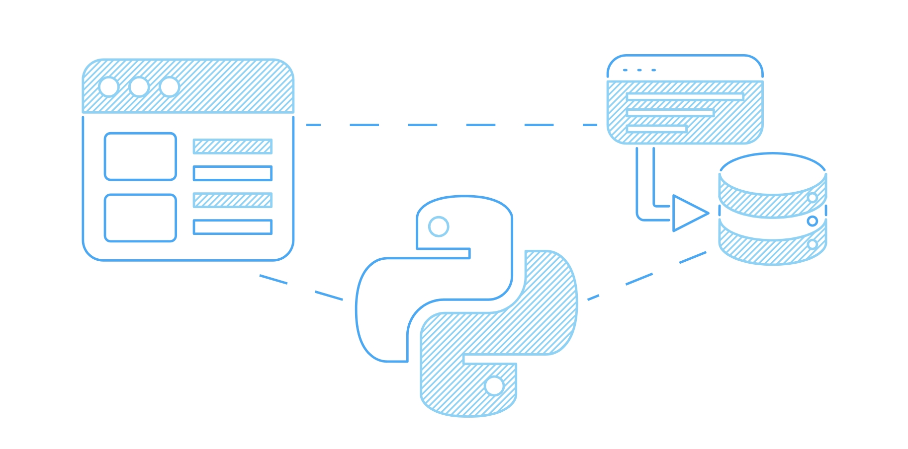

Project under development as member of the San Raffaele Hospital and UniSR AI Team in collaboration with Microsoft.
S-RACE is a secure, cloud-based platform designed to integrate Real-World Evidence (RWE) and Artificial Intelligence (AI) for personalized medicine.
Built on Microsoft Azure and Power BI, it offers an end-to-end clinical data science pipeline including on-premises anonymization, NLP-driven FHIR standardization,
a “Clinician AI Hub,” and a “Data Science Lab” using Azure ML Studio to support clinicians during diagnosis, treatment, and research.
Employing techniques such as machine learning, NLP, computer vision, and deep learning, the platform enhances decision-making while adhering to responsible AI principles
(SHAP Python library for explainability, ISO 42001:2023, EU AI Act).
It also enables privacy-preserving federated learning for international collaboration and has demonstrated utility in kidney cancer and aortic stenosis use cases,
ultimately improving prognostic accuracy.
In the picture above Satya Nadella (Microsoft's CEO), talking live worldwide about our project
during the Microsoft AI Tour in October 2024.
Moreover, Nature Digital Medicine published a paper about our cloud-based AI platform, Wired dedicated an entire section to us in their magazine N° 112 published in March 2025,
and Il Foglio, an important Italian newspaper, published an article on us in June 2025.

The D³4Health project, funded by the Italian Ministry of University and Research under the National Recovery and Resilience Plan (PNRR),
brings together 28 partners—including public and private universities, research institutes
(notably San Raffaele Hospital and UniSR as principal promoters), and industry stakeholders.
The initiative is structured around a digital health ecosystem aimed at transforming diagnostic, prognostic, and therapeutic approaches
through advanced data science and artificial intelligence technologies. It targets five major pathologies:
metastatic colorectal cancer, hepatic and biliary tract cancer, central nervous system malignancies, type I diabetes, and multiple sclerosis.
I contribute to this multi-center project as part of the San Raffaele Hospital and UniSR AI Team, focusing on the development of data-driven models
and predictive analytics for personalized healthcare.
The project employs high-performance computing and AI to integrate real-time data with predictive models for disease progression.
A secure, interoperable data infrastructure supports comprehensive multi-center data harmonization and longitudinal analysis.

The project, officially provided by Adidas, has the objective of analyzing the Adidas sales database
for years 2020/2021 and identify key insights to help improve sales performance and optimize business strategies.
By analyzing the sales data, the aim is to understand factors influencing sales, identify trends, and uncover opportunities for growth.
The analysis is conducted using Python, scikit-learn (to forecast and predict sales and trends)
and Power BI to provide interactive and insightful dashboards.

This project with case studies from Microsoft, TripAdvisor, and Uber was a deep dive into how causal inference can be combined with machine learning
to move beyond simple prediction and actually support better decisions, especially in fields like healthcare, economics, and public policy.
The content walked through the fundamentals of causal thinking, such as potential outcomes and treatment assignment,
and then explored modern techniques for estimating treatment effects using machine learning.
Along the way, I gained hands-on experience with tools like causal forests, meta-learners (like the S-, T-, and X-learners),
and double machine learning methods. The tutorial also emphasized how to evaluate these models and ensure robustness.
Python libraries used: econml, DoWhy,
and causalml.

Developed a machine learning model to predict online shopping behaviors.
The objective was to determine whether a user would complete a purchase based on their browsing session data.
The k-Nearest Neighbors (k-NN) algorithm effectively distinguishied between purchasing and non-purchasing sessions.
This project honed my skills in data preprocessing, feature selection, and the practical application of k-NN for classification tasks.

This project is a lightweight asynchronous web-scraper written in Python. Using aiohttp and asyncio, it fetches many pages in parallel
while respecting each site’s robots.txt and pausing between requests to avoid rate-limits.
A pluggable parser, just a simple function, lets you decide what data to extract, and the results flow straight into pandas or a CSV file
with a single call. Configurable concurrency, retries with exponential back-off, and per-request timeouts keep long crawls stable.
The same code runs neatly inside a JupyterLab notebook (top-level await is supported for interactive exploration)
or from the command line for scheduled jobs. In about 300 lines it demonstrates practical use of async networking, structured logging,
and clean data output—showing that robust scraping doesn’t require a heavyweight framework.